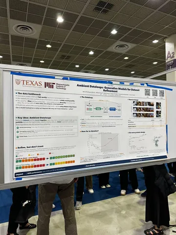
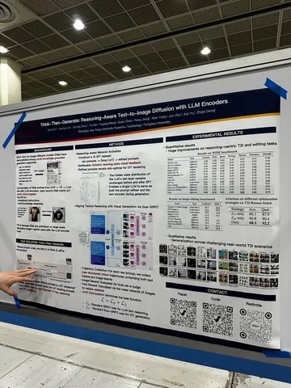
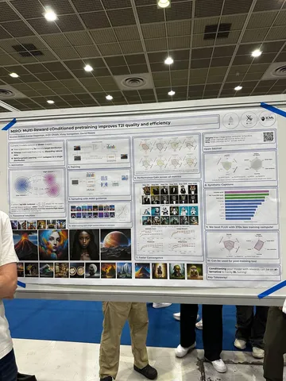

В Сеуле идёт ICML 2026, а мы продолжаем делиться работами на тему компьютерного зрения. Кстати, доля работ из области computer vision в этом году — почти 8%. Вторая по популярности тематика после LLM.
Ambient Dataloops: Generative Models for Dataset Refinement
Авторы рассматривают специфическую для text-to-image-моделей проблему, когда данных для конкретного домена немного, и семплы в них могут быть низкого качества. Например, хотим учиться генерировать советских космонавтов, но фотографий с ними очень мало, а те, что есть, часто в низком разрешении и с шумами.
В работе предложили итеративную процедуру обучения и рефайнмента данных, на которых оно проводится. Важно, что в работе считается, что метрика качества данных (асессорская разметка, эстетический скор, VLM-as-a-judge) уже задана, и мы заранее можем подсчитать, какие семплы хотим рефайнить. В таком случае можно:
Авторы показывают, что такой процесс помогает растить разнообразие генераций: модель не коллапсирует в слишком узкую моду в отличие от режима, в котором мы просто отбрасываем низкокачественные семплы.
Think-Then-Generate: Reasoning-Aware Text-to-Image Diffusion with LLM Encoders
За последнее время вышло много работ вокруг переписывания входных промптов для text-to-image- и editing-моделей. Те, которые показывали максимальное качество без циклического переписывания в формате inference-time scaling, в основном использовали для репромптинга внешние проприетарные модели вроде GPT или Gemini из-за более высокого базового качества. Использование текстовых энкодеров самих генеративных моделей в таком сетапе оказалось не очень полезным.
В этой работе предлагают сделать end-to-end-дообучение модели вместе с текстовым энкодером для буста качества репромптинга. Для этого авторы:
Такая схема невозможна с использованием внешней модели репромптинга — и интересно видеть, что авторы получили хороший буст качества. По их словам, инференс в таком сетапе всё ещё может быть не слишком дорогим, потому что можно настроить модель на генерацию небольших цепочек (порядка 200 токенов).
Но важно помнить, что в таком обучении выбор информативных ревордов ещё важнее. В неудачном случае скатиться в коллапс может не только генератор, но и текстовая модель.
MIRO: Multi-Reward cOnditioned pretraining improves T21 quality and efficiency
Авторы переизобрели технику из DALL-E 2, когда вместе с текстовым условием на вход дополнительно подаются значения реворд-моделей.
Справедливости ради, техрепорт DALL-E 2 полноценной статьёй не был, и предложенный там механизм ни с чем проаблейчен. В этой работе авторы показывают, что описанный там механизм предпочтительнее RL-методов из-за более высокой стабильности процесса обучения.
Глубоким придумыванием самих ревордов авторы тоже не занимались. «Просто нашли семь самых залайканных реворд-моделей для T2I на Hugging Face и просчитали их», — прокомментировал автор.
Интересное увидел
#YaICML2026
CV Time


